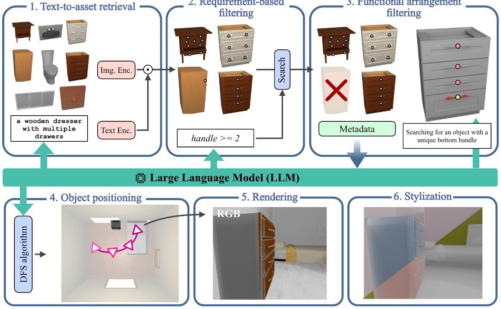
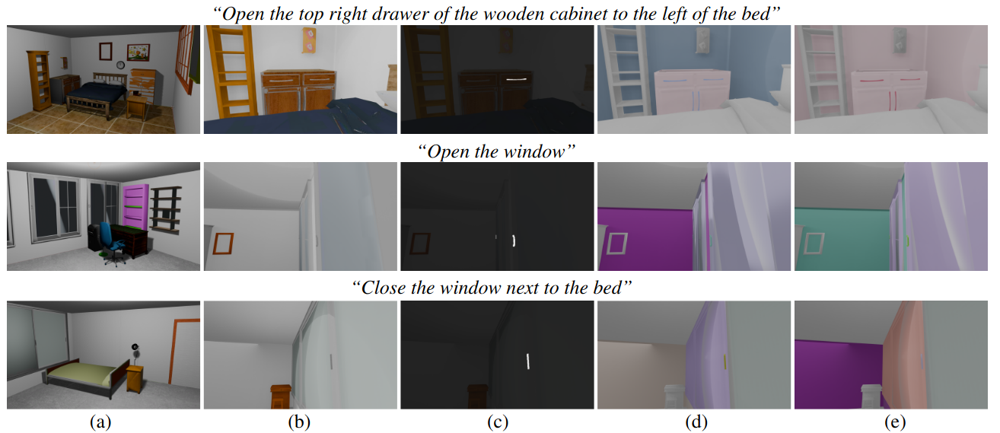
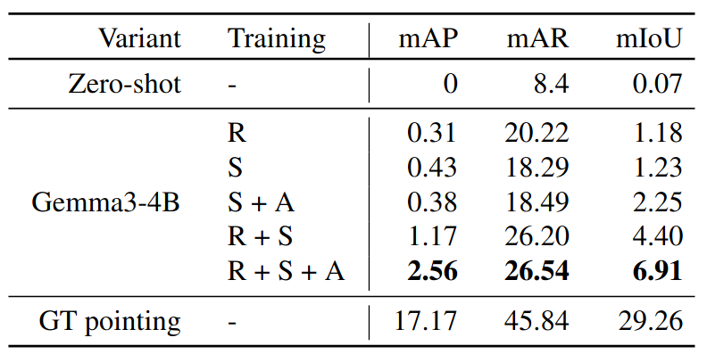

3D functionality segmentation aims to identify the interactive element in a 3D scene required to perform an action described in free-form language (e.g., the handle to "Open the second drawer of the cabinet near the bed"). Progress has been constrained by the scarcity of annotated real-world data, as collecting and labeling fine-grained 3D masks is prohibitively expensive. To address this limitation, we introduce SynthFun3D, the first method for generating 3D functionality segmentation data directly from action descriptions. Given an action description, SynthFun3D constructs a plausible 3D scene by retrieving objects with part-level annotations from a large-scale asset repository and arranging them under spatial and semantic constraints. SynthFun3D renders multi-view images and automatically identifies the target functional element, producing precise ground-truth masks without manual annotation. We demonstrate the effectiveness of the generated data by training a VLM-based 3D functionality segmentation model. Augmenting real-world data with our synthetic data consistently improves performance, with gains of +2.2 mAP, +6.3 mAR, and +5.7 mIoU over real-only training.


We show examples of ground-truth data generated by SynthFun3D from different textual descriptions. For each prompt, we show the original RGB image and the ground-truth functional mask of the functional element.
We measure the performance of SynthFun3D by using its generated data (S) to train a VLM for pointing at functional elements in images, following the approach in Fun3DU [1]. We test the trained model on real data from SceneFun3D [2]. The best performance is obtained by training with our data and the augmentation-enhanced frames (S+C) and finetuning on the real training set (R). Our method can generate training data that achieves comparable performance at a fraction of the cost requires to collect and annotate real data for functionality understanding.

[1] Yang, Yue, et al. "Holodeck: Language guided generation of 3d embodied ai environments." Proceedings of the IEEE/CVF Conference on Computer Vision and Pattern Recognition. 2024.
[2] Corsetti, Jaime, et al. "Functionality understanding and segmentation in 3D scenes." Proceedings of the IEEE/CVF Conference on Computer Vision and Pattern Recognition. 2025.
[3] Delitzas, Alexandros, et al. "Scenefun3D: Fine-grained functionality and affordance understanding in 3D scenes." Proceedings of the IEEE/CVF Conference on Computer Vision and Pattern Recognition. 2024.
BibTeX
@inproceedings{corsetti2026synthfun3d,
title={Action-guided generation of 3D functionality segmentation data},
author={Corsetti, Jaime and Giuliari, Francesco and Boscaini, Davide and Hermosilla, Pedro and Pilzer, Andrea and Mei, Guofeng and Delitzas, Alexandros and Engelmann, Francis and Poiesi, Fabio},
booktitle={IEE/CVF Conference on Computer Vision and Pattern Recognition Workshops (CVPRW)},
year={2026}
}